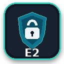

NOWY PROJEKT • ENIGMA2 • 05.10.2026
E2 Security 1.1.1
Ochrona dostępu do tunera z sieci — audyt bezpieczeństwa, zapora IPv4/IPv6 i profile ochrony obsługiwane z pilota.

Co potrafi E2 Security?
Wtyczka pomaga sprawdzić ustawienia dostępu do Enigma2 i aktywnie ograniczać połączenia przychodzące. Dostępność ochrony zależy od mechanizmów i modułów obecnych w systemie tunera.
- Audyt bezpieczeństwa — Sprawdza stan zapory, hasło konta root, aktywne usługi, porty oraz ustawienia autoryzacji.
- Zapora IPv4 i IPv6 — Korzysta z nftables albo iptables/ip6tables. Zarządza własnymi tabelami i łańcuchami, bez czyszczenia całej konfiguracji firewalla.
- Trzy profile ochrony — DOM dla wykrytej sieci prywatnej, ZAUFANE dla wskazanych adresów IP i LOCKDOWN blokujący nowe połączenia do usług tunera.
- Tymczasowe SSH — Pozwala udostępnić SSH na porcie 22 jednemu adresowi IP na około 30 minut. Wymaga aktywnego profilu DOM lub ZAUFANE, ustawionego hasła root i działającego serwera SSH.
- Ochrona logowania SSH — Po 5 nieudanych próbach w ciągu 10 minut adres może zostać zablokowany na około godzinę. Zapisane zaufane adresy są wyłączone z automatycznej blokady.
- OpenWebif i streaming — Sprawdza i pozwala włączyć mechanizmy autoryzacji obsługiwane przez dany obraz Enigma2.
- Zaufane urządzenia — Lista własnych adresów IPv4 i IPv6, np. komputera, telefonu i drugiego tunera.
- Dziennik zdarzeń — Zapisuje zmiany profili, blokady adresów i automatyczne przywracanie ustawień.
- Kontrola i naprawa modułów — Sprawdza wymagane mechanizmy zapory, próbuje doładować moduły jądra, a na obsługiwanych obrazach doinstalować brakujące pakiety.
- Potwierdzenie z pilota i rollback — Zmiana profilu wymaga potwierdzenia z pilota. Brak potwierdzenia uruchamia automatyczne wycofanie zmiany.
Który profil wybrać?
| Profil | Dostęp do usług | Kiedy go użyć |
|---|---|---|
| DOM | Z wykrytych i zapisanych prywatnych podsieci oraz zaufanych adresów. | Codzienne korzystanie w zaufanej sieci domowej. Po zmianie sieci wybierz profil ponownie. |
| ZAUFANE | Tylko z wcześniej zapisanych adresów IP. | Gdy chcesz wskazać konkretne urządzenia mające dostęp do tunera. |
| LOCKDOWN | Blokuje nowe połączenia do usług, także z LAN. Pozostawia ruch wychodzący i niezbędny ruch systemowy. | Gdy nie potrzebujesz dostępu sieciowego. Może zakłócić IPTV multicast i usługi wymagające połączeń przychodzących. |
DOM nie oznacza zaufania do każdego prywatnego adresu. Globalne adresy IPv6 urządzeń dodaj jawnie do listy zaufanych.
Instalacja przez FTP
- Pobierz E2-Security_1.1.1_all.ipk i prześlij go do
/tmpna tunerze. - W terminalu wykonaj poniższe polecenie.
- Uruchom ponownie GUI Enigma2 i otwórz E2 Security z menu wtyczek.
opkg install /tmp/E2-Security_1.1.1_all.ipkPakiet zachowuje nazwę techniczną enigma2-plugin-extensions-aiosecurity, dzięki czemu aktualizuje wcześniejsze wydania AIO Security / E2 Security w miejscu.
Pierwsze uruchomienie
- Uruchom Przegląd / Audyt bezpieczeństwa.
- Jeśli konto root nie ma hasła, ustaw je poleceniem
passwd. - Dodaj adresy swoich urządzeń w Zaufanych urządzeniach. Stały adres lub rezerwacja DHCP ułatwi korzystanie z profilu ZAUFANE.
- W razie brakujących modułów wybierz Sprawdź / napraw moduły zapory.
- Wybierz profil DOM dla swojej zaufanej sieci albo ZAUFANE dla konkretnych adresów i potwierdź zmianę z pilota.
- Sprawdź autoryzację OpenWebif i streamingu; po jej zmianie wykonaj Restart GUI, jeśli wymaga go obraz.
SSH, OpenWebif, FTP i Telnet
Telnet i zwykły FTP nie szyfrują danych. Do administracji używaj SSH/SFTP, jeżeli obraz je obsługuje. Profil DOM dopuszcza również FTP i Telnet z zaufanej sieci — samo wyłączenie tych usług wykonuje się w menedżerze usług systemu.
Monitor ochrony SSH wymaga obsługiwanych logów plikowych OpenSSH lub Dropbear. Bez takich logów nie będzie wykrywać błędnych logowań. Tymczasowy dostęp SSH nie konfiguruje przekierowań na routerze.
Moduły zapory i zgodność
E2 Security wymaga nftables albo iptables wraz z ip6tables oraz odpowiednich modułów jądra. Kontrola obejmuje m.in. conntrack/state, UDP, TCP, ICMP i ICMPv6. Wersja 1.1.1 sprawdza wymagane rozszerzenia przed aktywacją zapory i próbuje uzupełnić brakujące elementy z feedu obsługiwanego obrazu.
Jeżeli system nie zapewnia potrzebnej obsługi, dostępny pozostaje audyt, a aktywna ochrona nie zostanie uruchomiona. Zgodność z Python 2 i Python 3 nie oznacza dostępności modułów zapory w każdym obrazie.
Przywracanie dostępu
Jeżeli po zmianie profilu stracisz dostęp, skorzystaj z pilota i sekcji Przywracanie / pomoc, aby przywrócić poprzedni profil lub wyłączyć zaporę. Niepotwierdzona zmiana jest automatycznie wycofywana.
Gdy terminal pozostaje dostępny, użyj poleceń poniżej. Zablokowane SSH wymaga powrotu do pilota lub lokalnej konsoli.
e2-security offe2-security statuse2-security repairNie gwarantuje bezpieczeństwa tunera wystawionego bezpośrednio do Internetu. Do zdalnego dostępu korzystaj z VPN. Router stosujący proxy lub SNAT może sprawić, że połączenie z zewnątrz będzie widoczne jako lokalne. Inna zapora może dodatkowo blokować ruch dopuszczony przez E2 Security.
Plik do pobrania
Wersja: 1.1.1 • Platforma: Enigma2 • Python: 2 / 3 • Języki: PL / EN
Plik: E2-Security_1.1.1_all.ipk — 50.1 KB
SHA-256: b415765fc715aa4bbea68a8f4e46e0a34c9f4c9f64236e334e76fb7a6fc07c42
Autor: Paweł Pawełek • Licencja: GPL-3.0-or-later